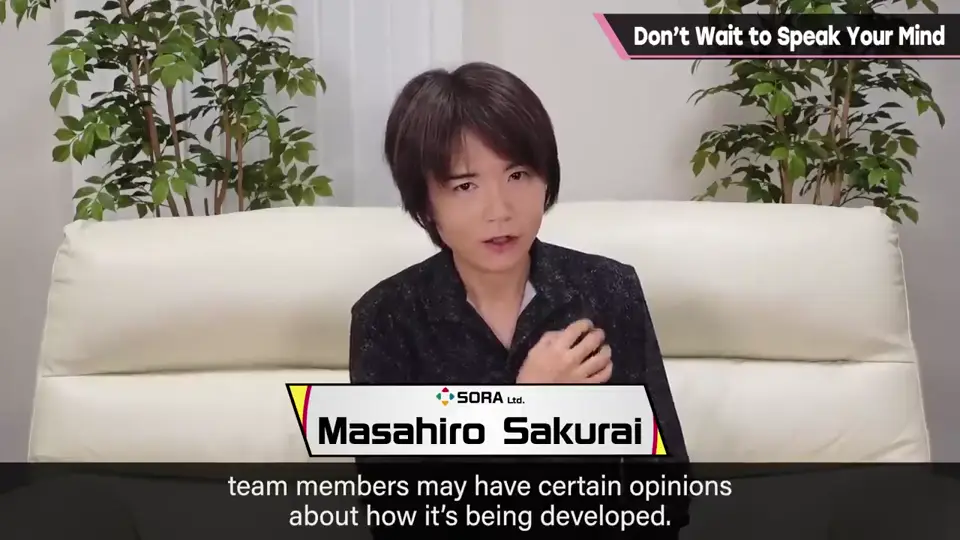
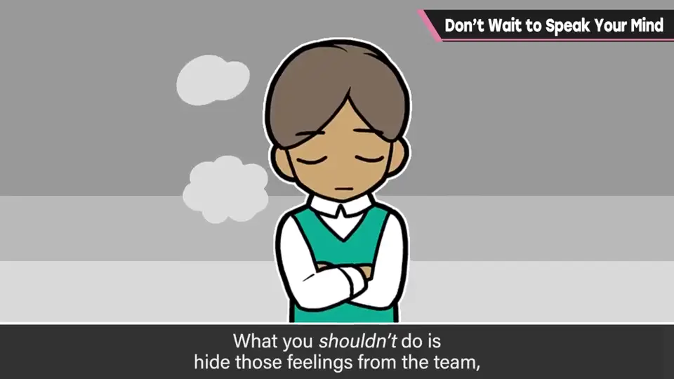
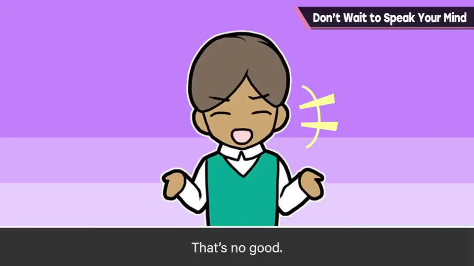
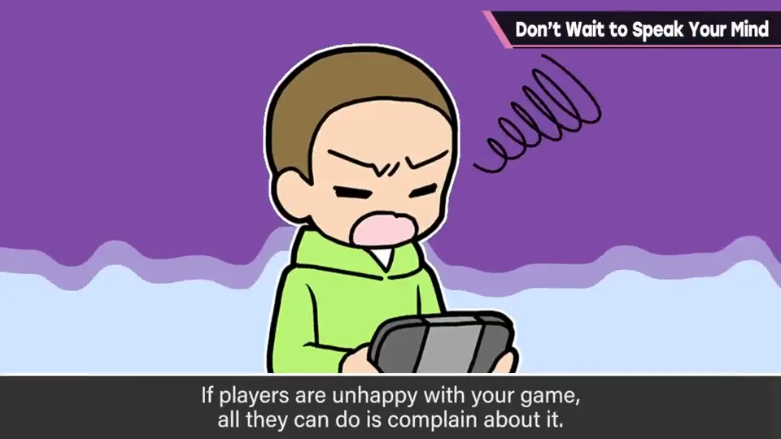
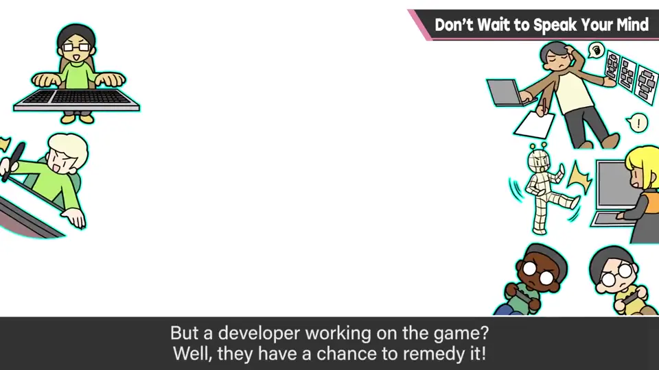
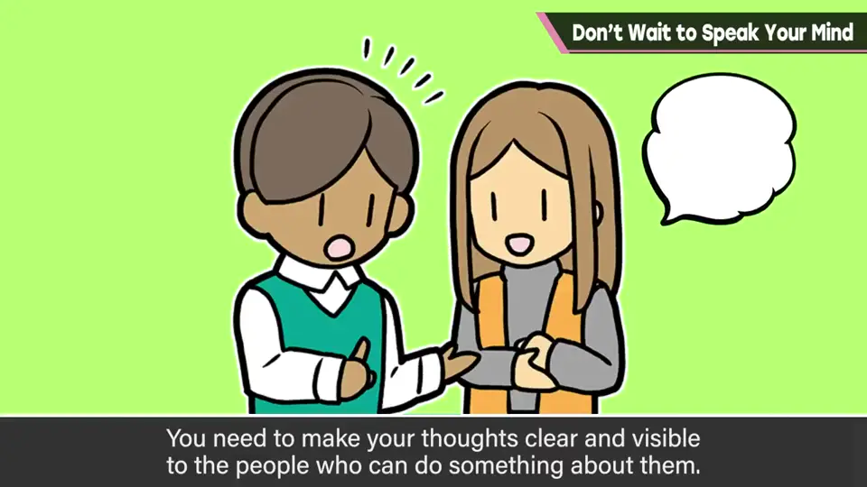
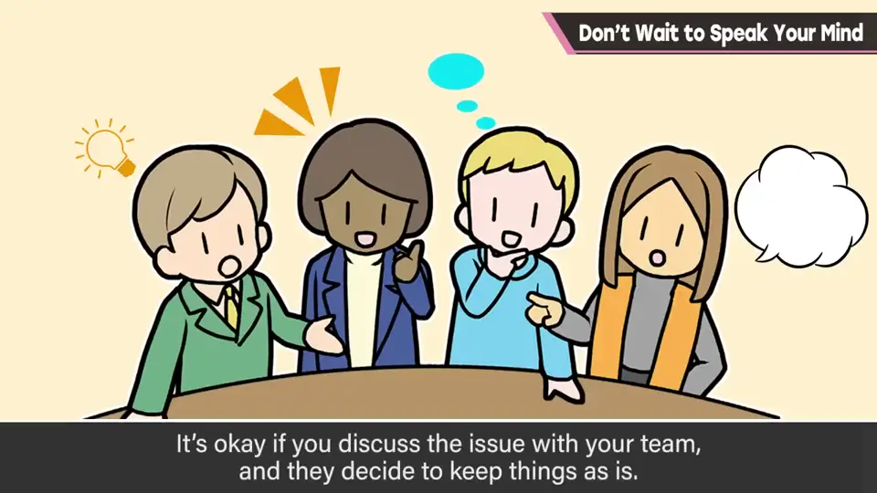
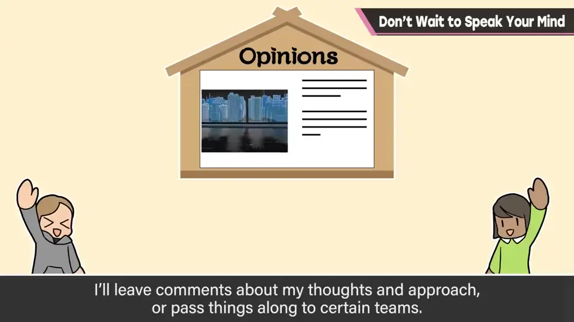
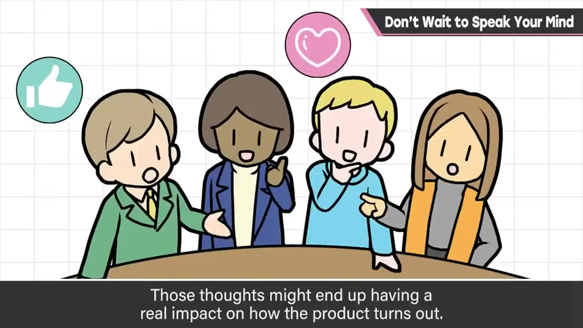

速览
制作游戏时，你可能对游戏规格或团队机制有些想法：「这样做更好吧」，不只规格，团队运营规则也可能有；职种、立场、喜好不同，会注意到的东西也多；也可能只是单纯不喜欢。抱有某种不满时，最不好的是在团队里时不表明，等完成、工作结束后才说「其实我当时是这么想的」。不管那句话会不会改变内容，事后诸葛不行：只是悄悄满足了自尊心，听的员工不会开心，对项目也没好处。该怎么做？想到时就在团队内共享意见。玩作品的玩家即使不满也只能抱怨，改不了内容；但团队里的人在开发中有可能改善，单单身在其中就处于非常有利的位置。所以首先是商量，别觉得「反正不会听」；向该说的人表达自己的想法，先「放到砧板上」。另外，说「这不行」可以，但一定要想「这样做会不会更好」的改善案——否定与改善案成套，这才是建设性的开发现场。团队讨论后维持现状也没关系，总有理由，知道理由就能接受；思考过程中也许自己就解决了；提出的改善案也许会在将来拯救很多玩家。樱井最近的开发里设置了「意见箱」之类，让大家可以无顾虑地提意见；他会对见解或方针作出回应，或分派给各部门；当然有时会流掉，但好好收集意见很重要。即使这样铺好路，不说的人还是不说；但团队内的不满别一直自己抱着，先表达出来，可能会改变未来的作品。能尽早修正方向就更容易达到目标；可否判断适当且迅速很重要。身在团队就有这种力量，所以要提出意见。听意见的一方也要灵活：也许需要能迅速得出结论的视野广度和理解深度。
1. 不满的来源 0:04
制作游戏时，你可能会对游戏规格或团队机制产生想法：「这样做会不会更好」。不只是游戏规格，团队运营的规则也可能有。

职种、立场、喜好不同，注意到的东西也多；也可能只是单纯不喜欢。
2. 最糟的做法：事后才说 0:30


不管那句话会不会改变内容，事后诸葛就是不行。只是悄悄满足了自己的自尊心，听的员工不会开心，对项目也毫无益处。
3. 身在团队就有改善的力量 1:00
想到时就应该在团队内共享意见。玩作品的玩家就算不满也只能抱怨，无法修改作品内容。


但团队里的人，在开发中就有改善的可能——光是身在其中，就处于非常有利的位置。
所以首先要商量。别觉得「反正也不会听」，向该说的人表明你的想法，先把它「放到砧板上」。

4. 否定与改善案成套 1:44
说「这不行」是可以的，但一定要同时思考「这样做会不会更好」的改善方案。

团队讨论后维持现状也没关系：总有某种理由，光是知道理由就能接受。思考过程中也许自己就想通了；你提出的改善案，将来也许会拯救很多玩家。
5. 意见箱与听的一方 2:26
樱井最近的开发中设置了「意见箱」之类，让大家对正在做的东西无顾虑地提意见。他会对见解和方针写回应，或分派给对应部门。当然有时会流掉，但好好拾取意见很重要。


即使这样铺好路，不说的人可能还是不说。但团队内的不满不要一直自己抱着，先表达出来——这也许会改变未来的作品。
能尽早修正轨道，就更容易到达目标；适当而迅速的可否判断很重要。身在团队就有这个力量，所以要提出意见。
自测题
1. 樱井认为面对不满时最不好的做法是什么？
在团队里不说，等工作结束后才说「其实我当时这么想」——事后诸葛。 0:30
2. 为什么说团队成员处于有利位置？
玩家不满只能抱怨，而开发中的成员有可能实际改善作品。 1:00
3. 提出否定意见时应该附带什么？
改善案：否定与改善案配成一套才是建设性的。 1:44